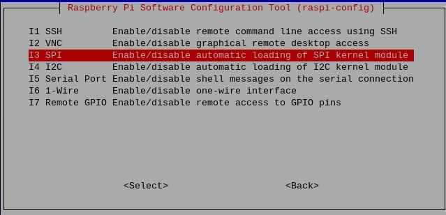
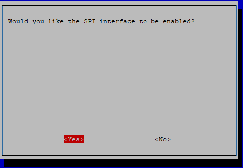

SPI Configuration
Step 1: Enable the SPI port of your Raspberry Pi (If you have enabled it, skip this; if you do not know whether you have done that or not, please continue).
sudo raspi-config
3 Interfacing options

I3 SPI
<YES>, then click <OK> and <Finish>.
Step 2: Check that the spi modules are loaded and active.
ls /dev/sp*
Then the following codes will appear (the number may be different).
/dev/spidev0.0 /dev/spidev0.1
Step 3: Install Python module SPI-Py.
git clone https://github.com/lthiery/SPI-Py.git
cd SPI-Py
sudo python3 setup.py install
Note
This step is for python users, if you use C language, please skip.